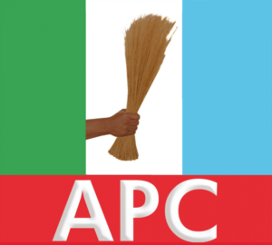
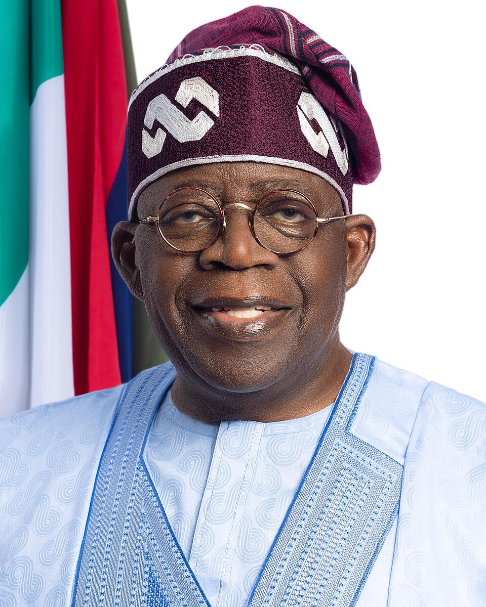
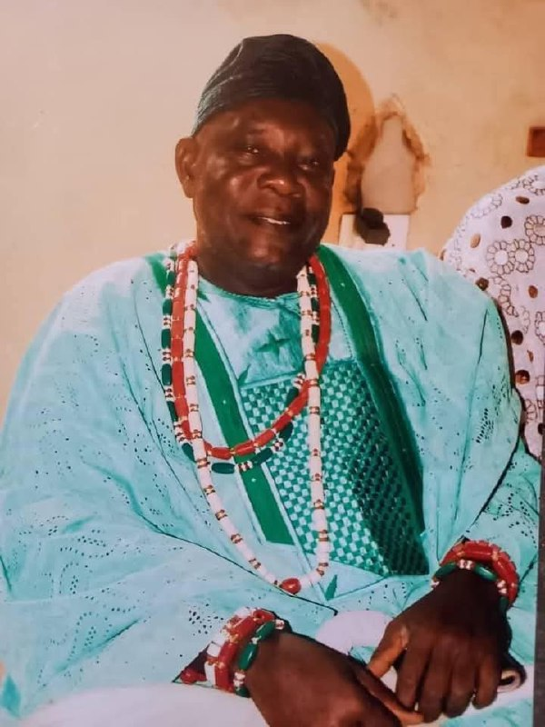
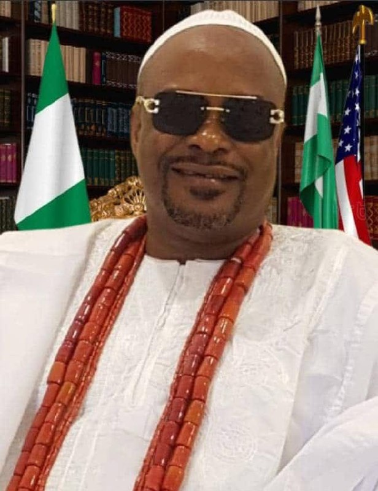
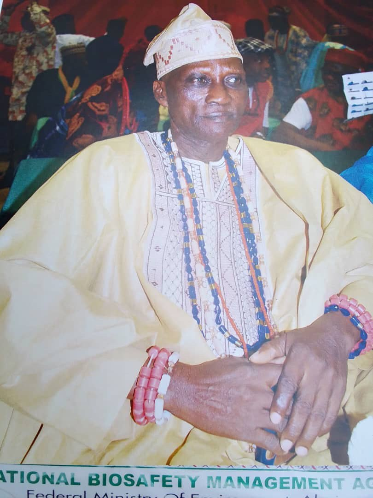
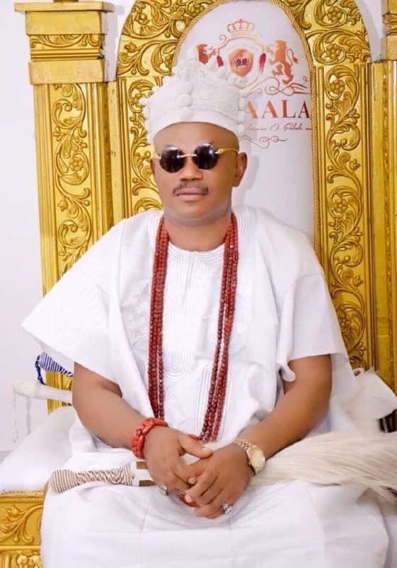
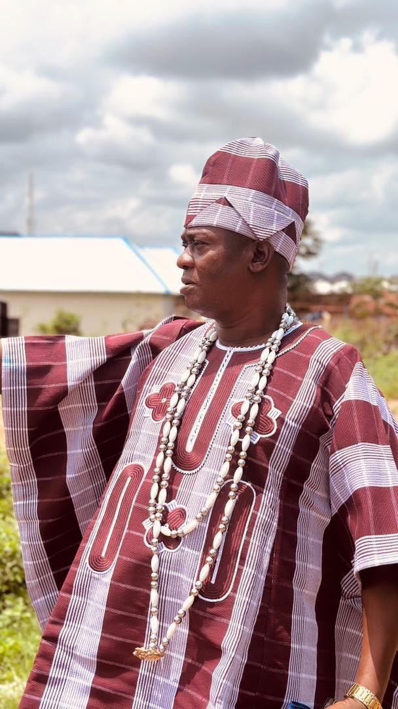

ALL PROGRESSIVE CONGRESS

President Bola Ahmed Tinubu
President Of Nigeria
Asiwaju Bola Ahmed Adekunle Tinubu GCFR is a Nigerian politician serving as the 16th and current president of Nigeria since 2023. He previously served as the governor of Lagos State from 1999 to 2007 and senator for Lagos West in the Third Republic.

Seyi Tinubu
Son of Nigeria President
Seyi Tinubu, son of Nigeria's President, focuses his activities on youth empowerment, entrepreneurship, and social welfare through initiatives like t he Change Nigeria Initiative, promoting business partnerships and civic engagement, and launching health projects like drug banks for indigent patients, while also supporting sports, technology, and mental health awareness as a prominent figure involved in national development discussions. He engages with young entrepreneurs, supports tech startups, and participates in public events, often seen alongside his father, balancing philanthropic efforts with advocacy for youth-led development. Key Areas of Activity: Youth & Entrepreneurship: Leading initiatives to foster youth-led investments, strengthen business ties, and create jobs, meeting with young Nigerian business leaders for economic growth. Healthcare Initiatives: Launched "drug banks" to provide essential medicines for 600,000 indigent patients monthly, focusing on maternal and child health, reports P.M. News. Social & Civic Engagement: Promoting patriotism, community service, and reorienting values through platforms like the Change Nigeria Initiative, aiming for broader private-sector support for development. Technology & Innovation: Supporting tech startups and digital initiatives to boost Nigeria's digital economy. Sports & Mental Health: Investing in sports development and promoting mental health awareness, supporting related organizations, notes P.M. News and Independent Newspaper Nigeria. Public Presence: Attends official functions with the President, meeting with stakeholders and acting as a liaison, while also leading his own projects, according to Modern Ghana. Examples of Initiatives: Change Nigeria Initiative: A platform for youth leaders and entrepreneurs to drive development. Hospital Paupers Fund (MAUTH Yola): Contributed funds and provided relief to indigent patients during Ramadan, reports Facebook. Seyi Tinubu met prominent young Igbo businessmen in Lagos to ... 22 Oct 2025 — According to sources familiar with the discussions, the engagement centred on exploring ways to promote youth-led investments, strengthen interregion... Facebook
POLITICS
Political Campaign Song
POLITICS
Political Campaign Song
POLITICS
Seyi Tinubu connecting with the youths! He’s been actively engaging youths through various initiatives as he even hit the courts, playing tennis with young enthusiasts in a joyful display of camaraderie during the meet and greet. He continues to win hearts and cementing his role as a true voice for the youth!
POLITICS
As part of the ongoing activities marking Seyi Tinubu’s 40th birthday, the Noella Foundation continues to reach communities through meaningful acts of service. Today, we distributed bags of rice donated by a generous supporter to families and individuals. We extend our heartfelt appreciation to our donors, friends, and well-wishers whose kindness fuels every initiative we undertake. Together, we’re turning celebration into impact. #NoellaFoundation #ST40

HRH Oba Olusegun Salau
The Chairman Of Yoruba Oba's FCT Abuja
A Monarch in FCT Abuja, Nigeria. Known for his leadership and community development efforts.

HRH Oba Abdul Rasheed Usman Duste Alhaji FCT Abuja
Yoruba Oba's FCT Abuja
A Monarch in FCT Abuja, Nigeria. Known for his leadership and community development efforts.

HRH Oba Anifowose Adeyinka Okikiola
Oba Isese Odua of FCT Abuja
A Monarch in FCT Abuja, Nigeria. Known for his leadership and community development efforts.

Oba Dr.Olu Adeoye JP
The Iludemilade 1, Byazhin Kubwa, FCT Abuja
A Monarch in FCT Abuja, Nigeria. Known for his leadership and community development efforts.

HRH Olu Engr, Yusuf Taiwo Ismail
Olu of Tunganmaje FCT Abuja
A Monarch in FCT Abuja, Nigeria. Known for his leadership and community development efforts.

HRH Oba Alimi Musbau Owolabi
The Coordinator of Oba's FCT Abuja
A Monarch in FCT Abuja, Nigeria. Known for his leadership and community development efforts.

HRM Oba S.O Falade
Oba Aala of FCT Abuja
A Monarch in FCT Abuja, Nigeria. Known for his leadership and community development efforts.

HRH Oba Babatunde Jimon
Oba Yoruba Pykakasaa Lugbe FCT Abuja
A Monarch in FCT Abuja, Nigeria. Known for his leadership and community development efforts.

FCT Abuja OBA'S
FCT Abuja